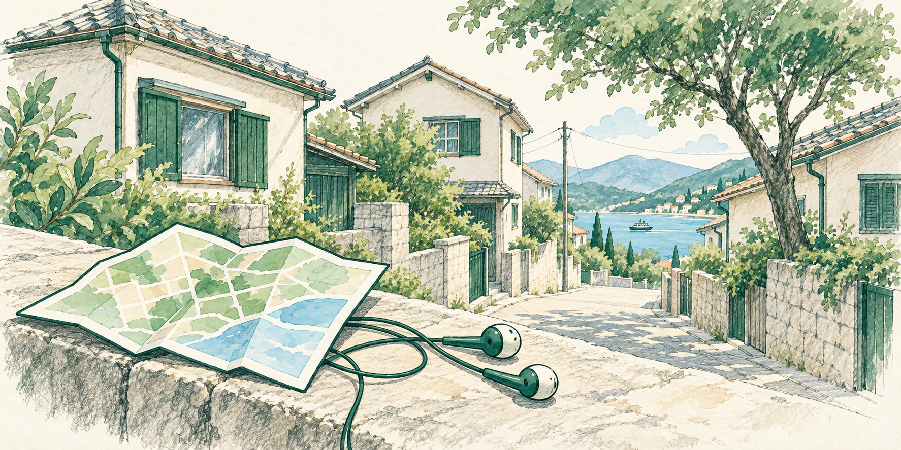
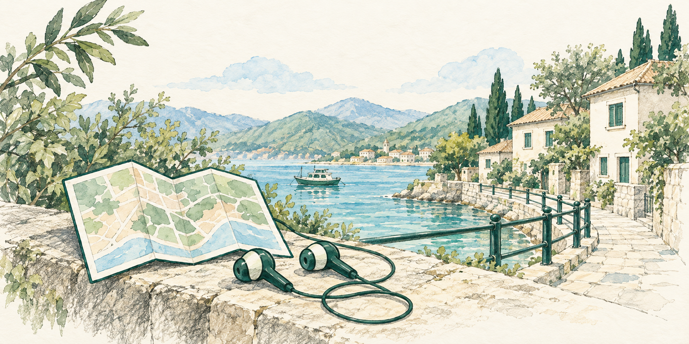
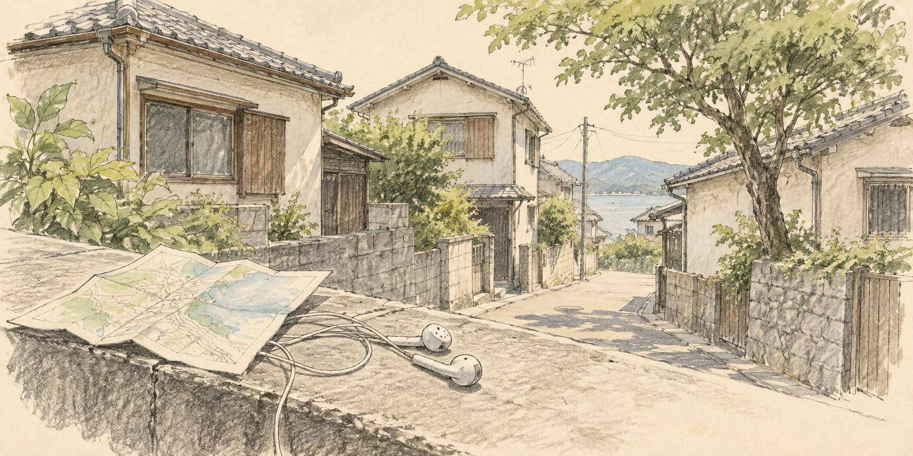
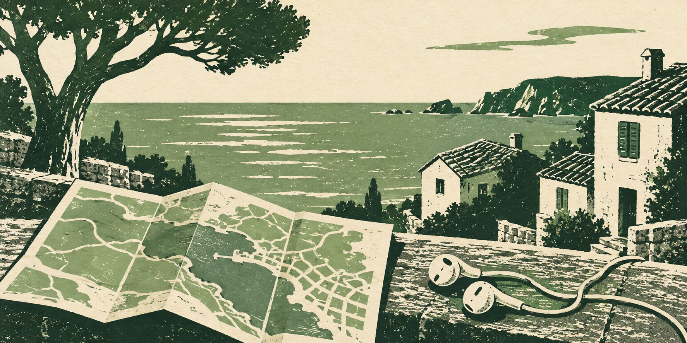
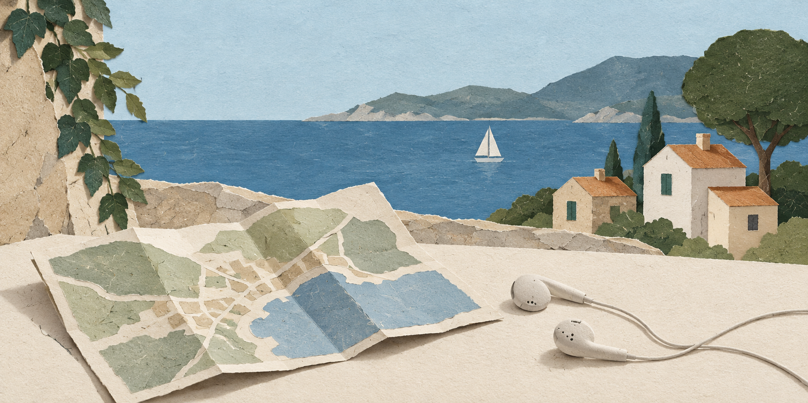
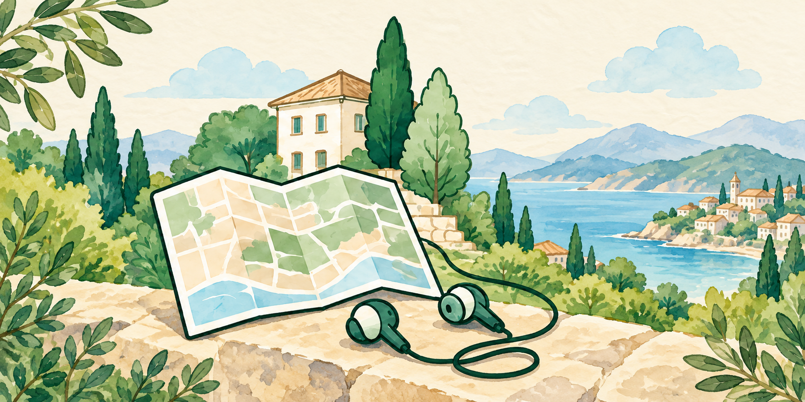

全候補1774×887px（2:1）。鉛筆の線と淡い色を保ち、アプリの深緑 #075747、セージ #739C85、アイボリー #FBFAF5、既存の地図や海辺のモチーフに合わせました。

2番の街並みと構図を引き継ぎ、色と地図・イヤホンをアプリに寄せた案。

ログイン画面や現在のホーム画像の海辺・家・深緑の柵を、鉛筆と淡彩で描いた案。
日常の光と、紙や木の自然な質感。

描き切らない線と淡い色を残したスケッチ。

少ない色数と、彫りや刷りの質感。

形を絞り、紙の重なりを見せるコラージュ。

こんにちは、旅行者さん
目的
移動手段